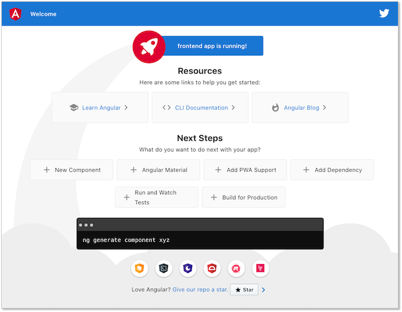
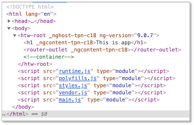
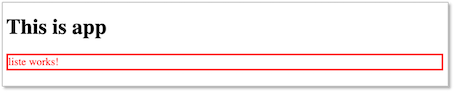
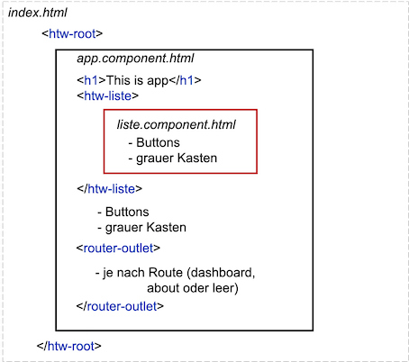
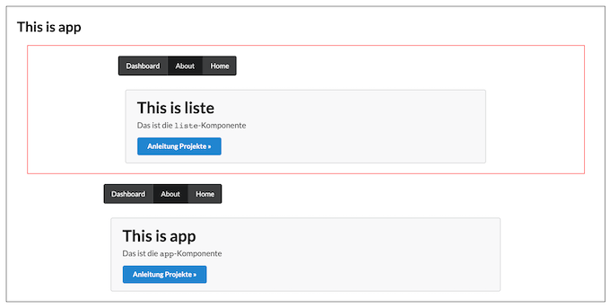
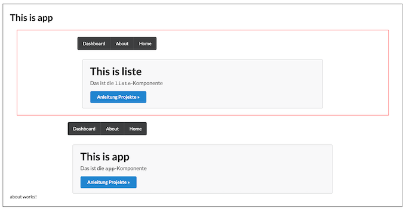

Frontend¶
Um das Frontend zu erstellen, können Sie auf verschiedene JavaScript-Frameworks zurückgreifen, die sich in den letzten Jahren etabliert haben:
Diese gehören zu den meisteverwendeten Frameworks für die Entwicklung sogenannter Single-Page-Applikationen. In einer Single-Page-Applikation wird eine Seite vom Webserver geladen und diese Seite durch unterschiedliche Inhalte befüllt, je nach Nutzerinteraktion. Diese Inhalte werden in Angular durch sogenannte Komponenten bereitgestellt. Komponenten sind die Grundbausteine einer Angular-Anwendung. Wir zeigen hier exemplarisch den Beginn der Erstellung eines Frontends am Beispiel von Angular.
Installationen¶
Sie benötigen den Paketmanager npm. Laden sie sich dafür node.js hier herunter und installieren Sie es. Nach erfolgreicher Installation sollte sowohl
node -v
funktionieren und eine Versionsnummer ausgeben (z.B. v13.3.0 - aktuell stabile Version ist aber v12.19.x) als auch
npm -v
(z.B. 6.14.8).
Außerdem benötigen Sie das Angular-Command-Line-Interface (CLI), das Sie mithilfe des Befehls
npm install -g @angular/cli
installieren. Danach sollte
ng --version
funktionieren und Ihnen etwas in dieser Art ausgeben:
_ _ ____ _ ___
/ \ _ __ __ _ _ _| | __ _ _ __ / ___| | |_ _|
/ △ \ | '_ \ / _` | | | | |/ _` | '__| | | | | | |
/ ___ \| | | | (_| | |_| | | (_| | | | |___| |___ | |
/_/ \_\_| |_|\__, |\__,_|_|\__,_|_| \____|_____|___|
|___/
Angular CLI: 9.0.1
Node: 13.3.0
OS: darwin x64
Angular:
...
Ivy Workspace:
Package Version
------------------------------------------------------
@angular-devkit/architect 0.900.1
@angular-devkit/core 9.0.1
@angular-devkit/schematics 9.0.1
@schematics/angular 9.0.1
@schematics/update 0.900.1
rxjs 6.5.3
Jetzt können wir unser erstes Projekt erstellen.
Projekt erstellen¶
Wir wollen ein Projekt namens frontend erstellen. Wechseln Sie in den Ordner, in dem Sie dieses Projekt erstellen wollen. Geben Sie dann ein:
ng new frontend
Sie werden nun gefragt, ob verschiedene Pakete hinzugefügt werden sollen, z.B.
? Would you like to add Angular routing? Yes
? Which stylesheet format would you like to use? CSS
IDE¶
Dieses Projekt können Sie mit der IDE Ihrer Wahl öffnen. Ich empfehle
git¶
Beachten Sie, dass das neue erstellte Projekt bereits von git verwaltet wird, d.h. frontend entspricht bereits Ihrem lokalen Repository. Auch die .gitignore ist bereits erstellt und passt so. Um dieses Repository nach z.B. GitHub zu pushen, erstellen Sie sich dort ein Repository frontend (hier lautet die Remote-Repository-URL https://github.com/jfreiheit/frontend.git - bei Ihnen natürlich anders.) Im Ordner projekte führen Sie dann aus:
git add .
git commit -m "first commit"
git remote add origin https://github.com/jfreiheit/frontend.git
git push -u origin master
Dort, wo https://github.com/jfreiheit/frontend.git steht, setzen Sie Ihre Remote-Repository-URL ein. Von nun an müssen Sie stets nur noch
git add .
git commit -m "commit-message"
git push
ausführen, um Ihre aktuelle Version auf das Remote-Repository zu pushen.
Anwendung starten¶
Um die Anwendung zu starten, wählen Sie entweder in Ihrer IDE den entsprechenden Run-Button aus (neben dem grünen Pfeil steht so etwas wie Angular CLI Server) oder Sie rufen in Ihrem frontend-Ordner
ng serve
auf. Nachdem das Compilieren erfolgreich war, geben Sie in den Browser die URL http://localhost:4200/ ein. Es erscheint:

Um diese Ansicht zu ändern, öffnen wir in unserer IDE die Datei /frontend/src/app/app.component.html, d.h. in Ihrem Projekt frontend klappen Sie src auf und dann app. Darin befinden sich verschiedene app.*-dateien. Sie öffnen app.component.html im Editor-Fenster.
Löschen Sie nun den gesamten Inhalt der Datei außer <router-outlet></router-outlet>. Fügen Sie oberhalb von <router-outlet></router-outlet> eine Überschrift <h1>This is app</h1> hinzu. Die app.component.html sieht jetzt so aus:
<h1>This is app</h1>
<router-outlet></router-outlet>
Beachten Sie, dass Sie im Browser die Seite gar nicht selbst neu laden müssen, sondern dass diese sich selbständig aktualisiert.
Single Page Application¶
Wenn wir eine Anwendung mit Angular erstellen, dann handelt es sich dabei um eine sogenannte Single Page Application (SPA), d.h. es wird genau eine Seite vom Webserver geladen und alle Inhalte werden in diese Seite (nach-)geladen, je nach Nutzerinteraktion. Die hier geladene Seite ist die index.html, die in unserem Projekte-Ordner frontendliegt. Sie sieht so aus:
<!doctype html>
<html lang="en">
<head>
<meta charset="utf-8">
<title>Frontend</title>
<base href="/">
<meta name="viewport" content="width=device-width, initial-scale=1">
<link rel="icon" type="image/x-icon" href="favicon.ico">
</head>
<body>
<app-root></app-root>
</body>
</html>
Das Element <app-root> ist dabei ein sogenannter Tag-Selektor (auch Element-Selektor oder Komponenten-Selektor).
Prefix ändern - optional¶
appist dabei ein Prefix, der für die gesamte Anwendung gilt. Diesen Prefix können Sie ändern. Öffnen Sie dazu die Datei angular.json, die sich im Projekt-Ordner frontend befindet. Diese Datei enthält die zentrale Konfiguration Ihres Projektes. Sie sieht wie folgt aus (Ausschnitt):
1 2 3 4 5 6 7 8 9 10 11 12 13 14 15 16 17 | |
Ändern Sie den Prefix in der hell markierten Zeile auf z.B. "htw" (andere Projekte vielleicht auf "bvg" oder "bsr"). Außerdem muss auch noch die tslint.json angepasst werden:
1 2 3 4 5 6 7 8 9 10 11 12 13 14 15 16 17 18 19 20 21 22 23 24 25 | |
Dort wo in den hervorgehobenen Zeilen nun das neue Prefix "htw" steht, stand vorher "app". In der index.html und in der app.component.ts auch noch ändern. Ab dann ist die Verwendung von "htw" als Prefix einegrichtet. Sie können es aber auch bei "app" belassen. Es soll an dieser Stelle einem besseren Verständnis des Prinzips dienen.
1 2 3 4 5 6 7 8 9 10 11 12 13 | |
1 2 3 4 5 6 7 8 9 | |
Komponenten-Selektoren¶
Nochmal zurück zu unserer index.html - der single page, die vom Webserver geladen wird und in die alle weiteren Komponenten eingebunden werden. Wir haben dort nun also den Komponenten-Selektor <htw-root></htw-root>. In diesen Selektor wird nun dir root-Komponente (app.component) geladen. Dieser Selektor wird durch die root-Komponente ersetzt. Das ist unsere app/app.component.*. Eine solche Komponente besteht immer aus einer css-, einer html- und einer ts-Datei. Es wird also in diesen Komponenten-Selektor der HTML-Code der app.component.html eingebunden. Das sehen Sie auch, wenn Sie die Developer-Tools an Ihrem Browser öffnen und sich den Quellcode der aktuellen Anwendung anschauen: 
neue Komponente erzeugen¶
Wir erzeugen uns eine neue Komponente mit dem Namen liste und verwenden dafür die Angular-CLI. Im Terminal geben Sie innerhalb des Projektordners frontend dazu den Befehl
ng generate component liste
In dem Befehl können Sie generate auch durch g und component durch c abkürzen. Es hätte also auch ng g c liste gereicht. Dadurch entsteht im src/app-Ordner eine neue Komponente liste (ein neuer Ordner liste), die folgende Dateien enthält:
liste.component.css- spezielle CSS-Definitionen nur für die Komponenteliste.component.html- HTML-Inhalt der Komponente (Ansicht, View oder Template genannt)liste.component.spec.ts- Spezifikation für das Testenliste.component.ts- die TypeScript-Datei der Komponente
Angenommen, wir definieren uns für unsere neue Komponente in liste.component.css CSS-Eigenschfaten und angenommen, binden in app.component.html die neue Komponente über ihren Komponenten-Selektor <htw-liste></htw-liste> ein:
1 2 3 | |
1 2 3 4 | |
, dann sieht unsere Anwenung so aus: 
In die index.html wird also die app.component.* (über den Komponenten-Selektor <htw-root>) eingebunden und in die app.component.html wird die liste.component.* (über den Komponenten-Selektor <htw-liste>) eingebunden. So können Sie Komponenten beliebig verschachteln.
CSS-Framework verwenden¶
Es ist empfehlenswert, für ein mordernes und einheitliches Design ein CSS-Framework zu verwenden. Die Auswahl unter solchen Frameworks ist groß. Hier einige Empfehlungen:
Wir wollen hier exemplarisch einmal SemanticUI einbinden. Geben Sie dazu im Terminal in dem frontend-Verzeichnis
npm install semantic-ui-css
ein. Sollten Sie die Meldung bekommen, dass Paket bedenklich ist (found 1 high severity vulnerability), geben Sie danach noch npm audit fix ein. Durch diese Anweisung werden die benötigten Style-Dateien geladen und unter dem Ordner node_modules/semantic-ui-css gespeichert. Diese müssen jetzt nur noch in das Projekt eingebunden werden. Öffnen Sie dazu in Ihrer IDE die Datei angular.json. Bei dieser Datei handelt es sich um eine JSON-Datei, die für die Konfiguration unserer Angular-Anwendung zuständig ist. In der angular.json-Datei ändern wir unter "projects"→"frontend"→"architect"→"build"→"options"→"styles" den Eintrag von
"styles": [
"src/styles.css"
],
auf
"styles": [
"node_modules/semantic-ui-css/semantic.css"
],
Sie können auch beides angeben. Die gleiche Änderung führen wir in angular.json unter "test" (statt "build") durch, um die Styles auch beim Testen einzubeziehen. Also unter "projects"→"frontend"→"architect"→"test"→"options"→"styles" ebenfalls nach
"styles": [
"node_modules/semantic-ui-css/semantic.css"
],
ändern.
Um zu testen, ob das Einbinden der Semantic-UI-Styles geklappt hat, öffnen wir in der IDE die Datei app.component.html und geben die hervorgehobenen Zeilen ein (Listing zeigt die vollständige Datei app.component.html):
1 2 3 4 5 6 | |
Wir gestalten also das Template unserer App-Komponente als ein div im div. Beiden divs werden CSS-Klassen aus dem Semantic-UI-Framework zugeordnet (siehe z.B. Klasse loader).
Als Beweis, dass die CSS-Eigenschaften des Frameworks auch in allen anderen Komponenten genutzt werden können, ändern wir auch noch unsere liste.component.html:
1 2 3 4 5 6 | |
Routing¶
Routing spielt eine zentrale Rolle in einer Applikation. Durch das Routing sind wir in der Lage, zwischen Komponenten hin- und her zu wechseln. Derzeit haben wir unsere Komponenten jeweils statisch über die Komponenten-Selektoren eingebunden. Nun soll ein dynamisches Einbinden erfolgen. Wenn wir uns nochmal die app.component.html anschauen, dann befindet sich darin eine Komponenten-Selektor <router-outlet></router-outlet>. In diesen werden durch Routing nun dynamisch Komponenten eingebunden.
Wir haben bei der Erstellung des Projektes bei der Frage,
? Would you like to add Angular routing? Yes
mit "yes" geantwortet. Deshalb müssen wir das Routing-Modul nun nicht mehr einbinden. Sollte dies jedoch noch nicht geschehen sein, können Sie das mithilfe von
npm install @angular/router --save
nachholen.
Um das Routing zu erläutern, erstellen wir uns drei weitere Komponenten dashboard, about und tasks.
ng g c dashboard
ng g c about
ng g c tasks
Die dashboardund die about-Komponente definieren wir jeweils als "Top-Level"-Routen. Das bedeutet, dass wir diese Komponenten über localhost:4200/dashboard bzw localhost:4200/about erreichen werden. Dazu öffnen wir die app.routing.module.ts-Datei, die sich im app-Ordner befindet und ergänzen sie wie folgt (hinzugefügte Zeilen hervorgehoben):
1 2 3 4 5 6 7 8 9 10 11 12 13 14 15 16 | |
In den Zeilen 4 und 5 wurden die Komponenten importiert, für die wir Routen anlegen wollen. Diese Routen wurden in den Zeilen 8 und 9 definiert. Die URL (localhost:4200) wird um den path /dashboard erweitert, um die dashboard-Komponente aufzurufen und um den path /about, um die about-Komponente einzubinden.
Wir passen jetzt noch die Views der root-Komponente udn der liste-Komponente an, um das Ergebnis des Routings zu veranschaulichen (es sind jeweils die vollständigen *.component.html-Dateien angegeben:
1 2 3 4 5 6 7 8 9 10 11 12 13 14 15 16 17 18 19 20 21 22 23 24 | |
1 2 3 4 5 6 7 8 9 10 11 12 13 14 15 16 17 18 19 20 21 | |
1 | |
Grob ist unsere HTML-Struktur nun wie folgt:

In der index.html wird die root-Komponente (app.component.html) eingebunden. Ich habe extra einen schwarzen Rahmen um diese View gemacht, damit man erkennen kann, welche Inhalte diese Komponente hat. In der app.component.html wird die liste.component.html eingebunden. Um diese View habe ich einen roten Rahmen definiert. In beiden Komponenten gibt es Links auf die drei Routen:
/-localhost:4200/dashboard-localhost:4200/dashboard/about-localhost:4200/about
und darunter einen grauen Kasten. Der Selektor <router-outlet></div>router-outlet> ist Teil der app.component.html. Hier wird nun dynamisch die entsprechende Komponente eingefügt, je nach Route. Das heißt, unter der URL localhost:4200/dashboard erscheint dort die View von dashboard (also dashboard.component.html) und unter der URL localhost:4200/about erscheint dort die View von about (also about.component.html).
Ansicht für http://localhost:4200/:

Ansicht für http://localhost:4200/dashboard:
Ansicht für http://localhost:4200/about:

Sie können nun
- ein Angular-Projekt erzeugen,
- ein externes CSS-Framework einbinden,
- Komponenten erstellen und einbinden sowie
- Routen definieren.
Damit haben Sie erstmal die notwendigsten Hilfsmittel in der Hand, um loszulegen, denke ich. Viel Spaß mit Angular und viel Erfolg im Projekt!